Разметка текста
- Теги <h1><h6>
- При помощи данных тегов указывается заголовок страницы.Заголовки указываются от h1 до h6.
h1 является заголовком верхнего уровня , самым главным и используется на странице 1 раз.
h6 является подзаголовком самого нижнего уровня.Все теги разметки используются в body.
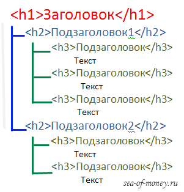
- Тег <p>
- Предназначен для разметке абзацеф (параграфов)
- Тег <ul>
- Используется для разметки неупордоченных списков.Внутри <ul> используется тег <li> для указания элемента внутри списка.
Стандартно неупорядоченные элементы списка отмечаются маркером.Не важен порядок элементов
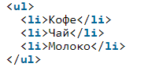
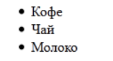
- Тег <ol>
- Используется для разметки упордоченных списков.Внутри <ol> используется тег <li> для указания элемента внутри списка.
Стандартно упорядоченные элементы списка нумеруются.Важен порядок элементов.
Так же упорядоченные и неупорядоченные можно вкладывать друг в друга.
При помощи атрибута start можно изменить начальный отсчет в списке.
Атрибут reservet поможет вам изменить направление от счета элементов.
Атрибут type может изменть тип используемого маркера(например на латинские буквы).
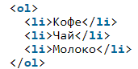
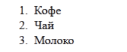 - Теги <dl>,<dt>,<dd>
- Эти теги используются для создания списка описания.Ими можно создавать вопрос-ответ ,
термин и его определение , и так далее.
При помощи dl обозначается сам список , внутри которого размещаются dt и dd.
dt обозначает термин , а dd описание этого термина
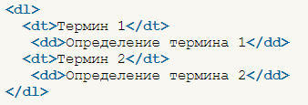
- Тег <br>
- Используется для переноса строки на новую
- Теги <q> и <blockquote>
- Два этих тега используются для выделения цитат.
Тегом q выделяется короткая строчка цитата , blockquote используется для выделения цитат из нескольких абзацев. - Теги <em> и <i>
- Эти теги предназначены для выделения текста курсивом, но em используется
для текста с особым акцентом , влияющий на смысл предложения , а i
для обозначения текста курсивом(например термин)
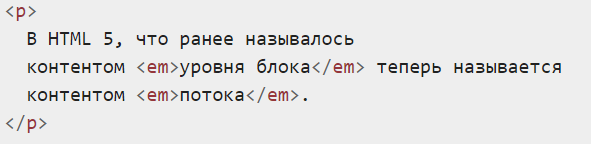 - Теги <strong> и <b>
- Предназначены для выделения текста жирным шрифтом.
strong используют для указания важности выделенного фрагмента текста , а
b используют с целью превлечения внимания.
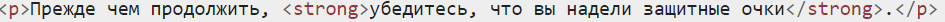 - Теги <del> и <ins>
- При помощи del можно зачеркивать тест(например из списка дел вычеркнуть что уже было сделано),
а при помощи ins можно подчеркнуть текст (например новое добавленное дело).
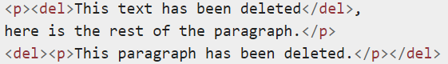
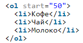 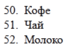
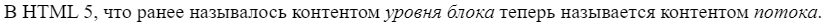
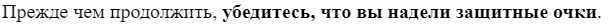
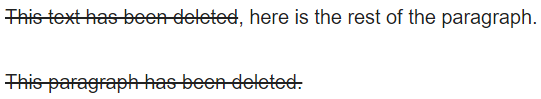
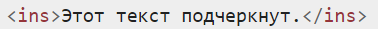
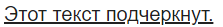